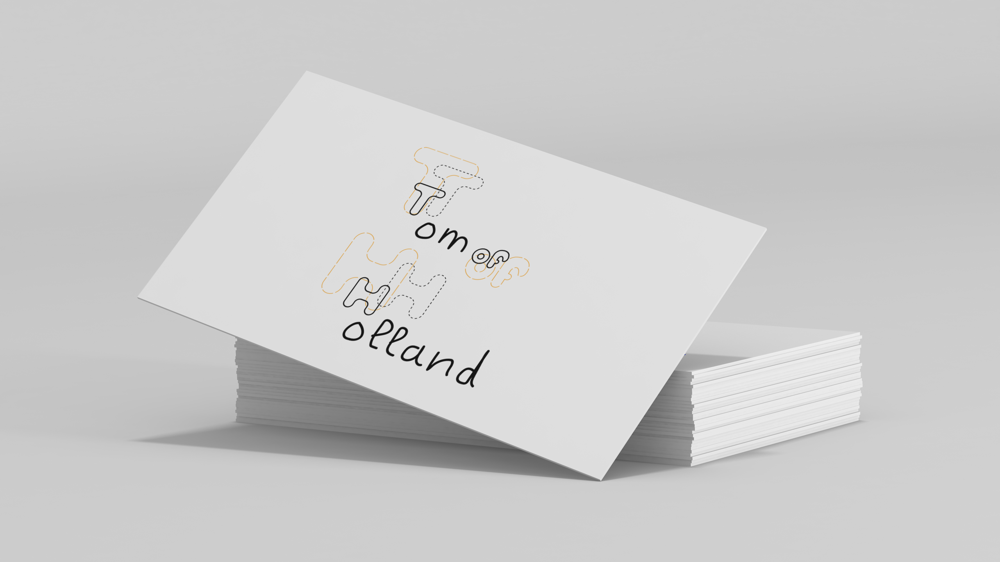
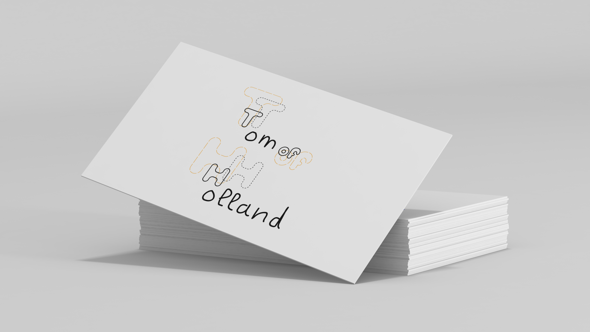
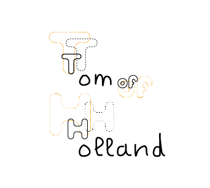

Tom of Holland est un créateur en Visible Mending qui a besoin de faire connaître son activité, ses valeurs et imposer une image de créateur. L’objectif est de lui créer une identité de marque. Il valorise le tissu abîmé, magnifie et sublime les traces du temps. Je suis donc partie sur l’idée de surperposition qui n’est pas la pour cacher mais pour mettre en valeur l’élément. La typographie manuscrite est pour rappeler l’effet manuelle qu’apporte le créateur à son travail.
